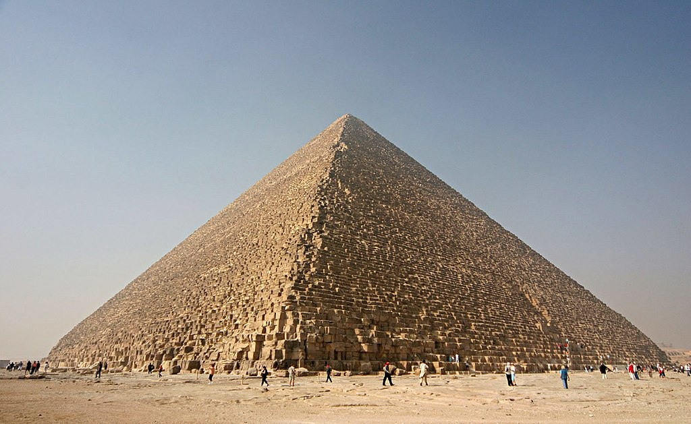

მსოფლიოს საოცრებები
არტემიდას ტაძარი

არტემიდას ტაძარი (ბერძნ. Artemision, ლათ. Artemisium), ასევე ეფესოს ტაძარი,
დიანას ტაძარი — მსოფლიოს შვიდ საოცრებათაგან ერთ-ერთი, ბერძნული ქალღმერთი
არტემიდასადმი მიძღვნილი ტაძარი ეფესოში; აგებულია დაახ. ძვ. წ. 550 წელს სპარსეთის
იმპერიის აქამენიდთა დინასტიის მმართველობის პერიოდში.ამჟამად თურქეთის ტერიტორიაზეა.
თავდაპირველი ტაძრისგან დღემდე არაფერი შემორჩენილა. იგი მშენებლობის დამთავრებიდან მალევე
განზრახ გადაწვა ჰეროსტრატემ, ზუსტად იმ დღეს როდესაც ალექსანდრე მაკედონელი დაიბადა, მას ასეთი
სრულყოფილების განადგურებით თავისი სახელის უკვდავყოფა სურდა. ის დაიჭირეს და სასტიკი წამების
შემდეგ სიკვდილით დასაჯეს. ამ ამბის მოყოლა ან მისი სახელის ხსენება ეკრძალებოდა ყველას, მათ შორის
ყველა სახის მემატიანეს. რამდენიმე საუკუნის განმავლობაში, მისი სახელის ხსენება სიკვდილით ისჯებოდა.
როგორც ჩანს ჰეროსტრატემ მიზანს მიაღწია, ყოველ შემთხვევაში თავისი ქმედების შემდგომი
25-26 საუკუნის განმავლობაში მაინც.
ხეოფსის პირამიდა

ხეოფსის (ხუფუს) პირამიდა, იგივე გიზას დიდი პირამიდა — შვიდი საოცრებიდან
ერთ-ერთი და ჩვენამდე მოღწეული ერთადერთი ნაგებობა, ყველაზე დიდი პირამიდა.
მისი მშენებლობა ჩვენ წელთაღრიცხვამდე 26-ე საუკუნეში დაიწყო. პირამიდის სიმაღლე
147 მეტრი იყო, მაგრამ დღესდღეობით ის 136 მეტრია. მისი თითოეული გვერდის სიგრძე
233 მეტრია. 1 კილომეტრის გავლაა საჭირო, რომ შემოუარო ამ პირამიდას.
ბაბილონის დაკიდებული ბაღები

ბაბილონის დაკიდებული ბაღები — ქალაქ ბაბილონში ნაბუქოდონოსორის მიერ
აგებული კონსტრუქცია, რომელშიც ათასგვარი მცენარე ხარობდა. შენობა ოთხიარუსიანი იყო.
მას დააყარეს იმ სისქის მიწა, რომ ყველაზე დიდ მცენარეებსაც შეეძლოთ ეხარათ.
მისთვის შორეული ქვეყნებიდან მოჰქონდათ ლამაზი მცენარეები. სარწყავი სისტემა წყალსაცავიდან
მილების საშუალებით წყალს ოთხივე იარუსს აწვდიდა. დაკიდებულმა ბაღებმა ჩვენს დრომდე ვერ
მოაღწია. ძველმა ბერძნებმა დიდი შეცდომა დაუშვეს, როდესაც დაკიდებული ბაღების აგება დედოფალ
სემირამიდას დაუკავშირეს. დედოფალი სემირამიდა მოღვაწეობდა ძვ. წ. IX საუკუნეში. შენობა კი
ნაბუქოდონოსორმა ძვ.წ. VI საუკუნეში ააგო დედოფალ ამიტასათვის.